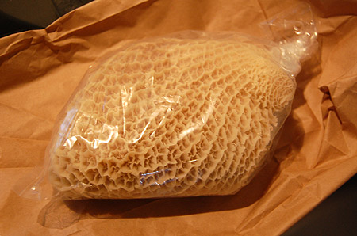
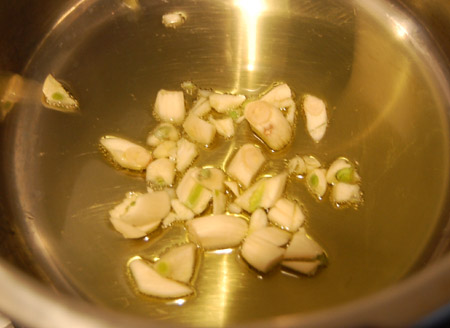
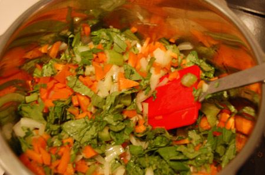
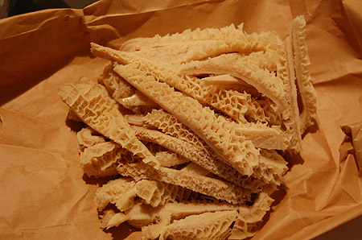
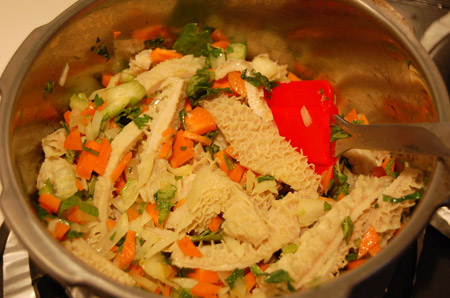
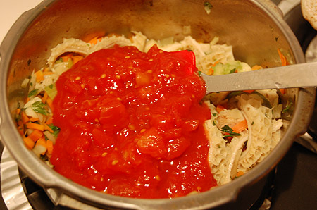
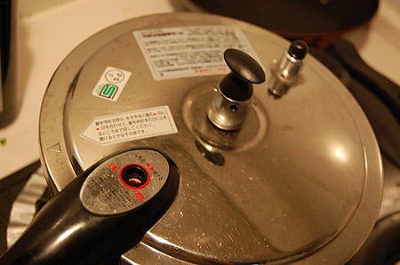
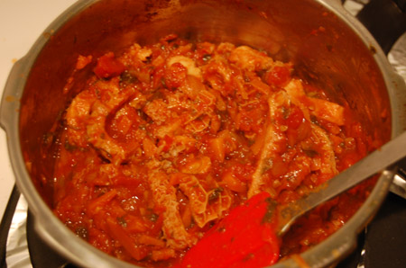
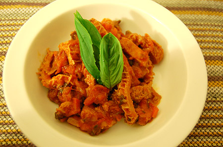
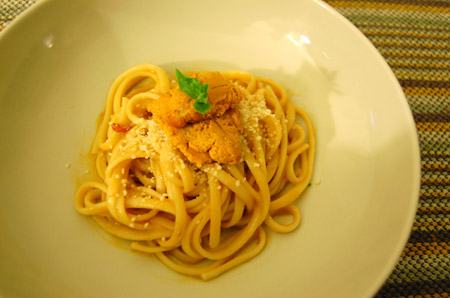

{kind=link}

美味しいイタリアン食べたい病です。 とりあえず、トリッパ煮てみましたよっ！ ウチからちょっと自転車を走らせた先にコリアンタウンがあって、そこにある精肉店はホルモン類が充実。 んで、ハチノスも当たり前のよーに売っていて、「気になるなー。」と思い続けて早2ヶ月ばかり。 ようやく購入。100g210円。一枚で500円ちょっとって感じ。 気持ち悪い！…と言うヒトもいるらしいけど、ワタシ的にはうずうずするほど美味しそうに見えてならないなー。 アミガサタケに似てる。{kind=link}

さて、レシピ。 初トリッパ料理なのだけど、相変わらずの勘レシピで製作進めてみますね。 オリーブオイルたっぷりと、にんにくたっぷり。 にんにくは潰してから粗みじん。{kind=link}

にんじん、セロリ、たまねぎもみじん。 で、炒める。{kind=link}

トリッパは適当に細切り。だいたいこんなぐらい。 トリッパは第二胃袋とゆーだけあって、形状は袋状。 ちょうど帽子のようにかぶれそうだったので、かぶろうかどうかちょっと悩んだ。 帽子を左右に切り開くように捌いていくがよし。 ちなみに購入したのは下処理してあるものだったので、生ハチノスの場合はゆでこぼしたり、 香味野菜で下茹でする必要あり。ちなみに、ワタシが買った精肉店では生も売ってた。 生は下処理済みより安くて100g150円だったかな。{kind=link}

一緒に適当に炒める。 白ワイン投入。塩、胡椒、オレガノだとか、ローリエとかハーブ類も適当に。{kind=link}

カットトマトを一缶入れる。ホールでもいいと思うけど、どっちでもー。{kind=link}

よくわかんないけど圧力鍋で圧をかけてみる。 3分ぐらい圧をかけて、自然に圧が抜けるまで放置。{kind=link}

味を整えながら、水分を飛ばしていく。 要はイタリア版もつ煮なわけだから、適当でいいのかなー。{kind=link}

できあがり。 久しぶりの新メニュー。うんまい。ワインにあうあう。 少し圧をかけすぎなのかなー。ちょっと食感が柔いかも。 でも、いままでお店で食べたトリッパよりいい感じかも。やっぱりもつ煮は自分好みに仕上げるのがいいのかな。{kind=link}

ついでにパスタ。 ウニのクリームパスタ。リングイネもたまにはいいねー。